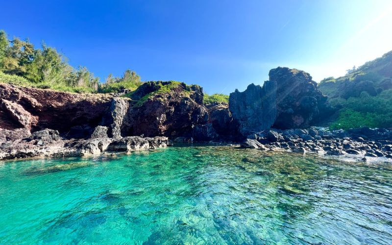
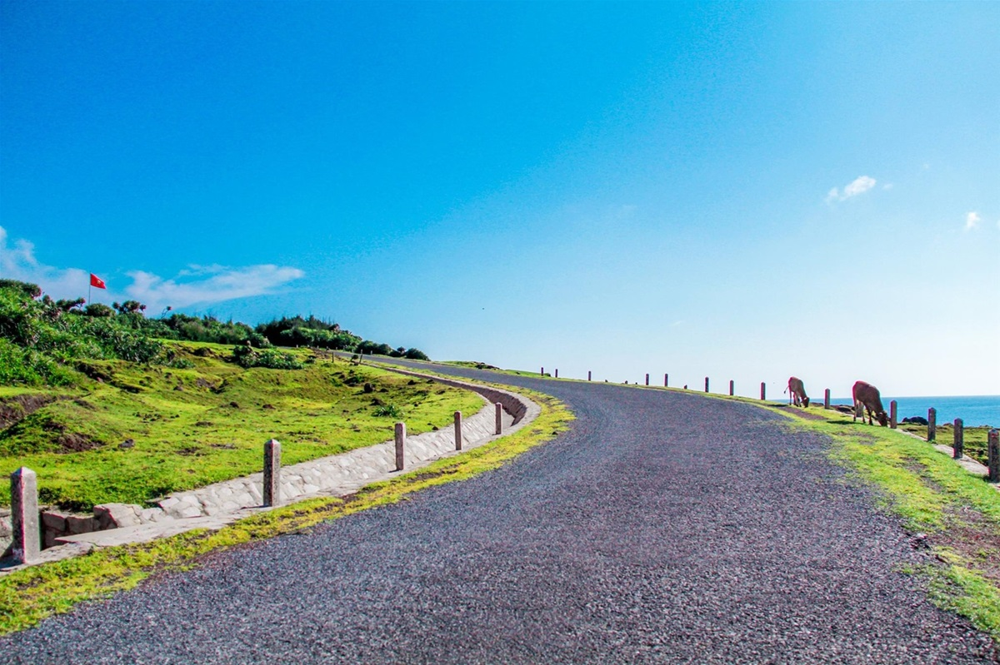
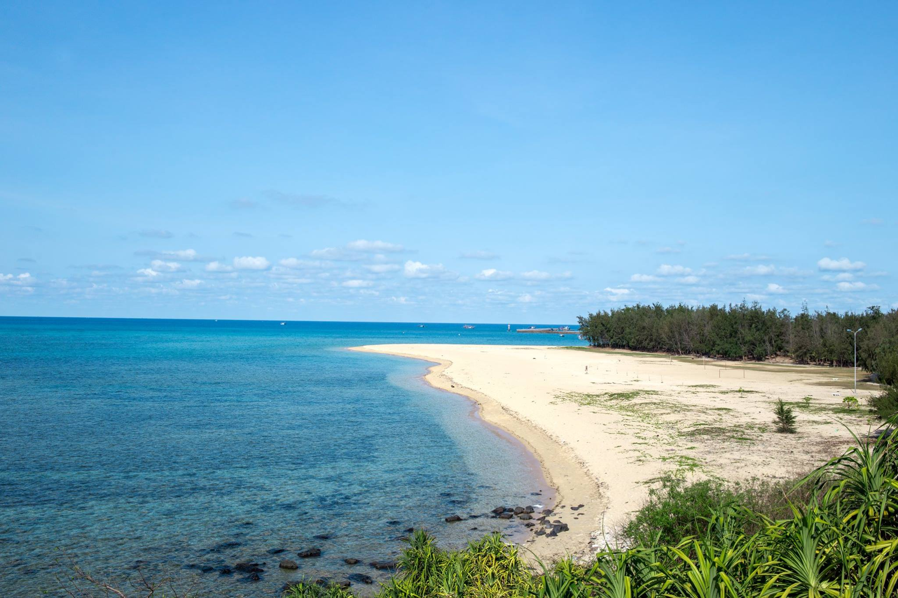
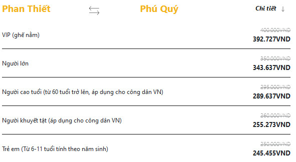

Giới thiệu về đảo Phú Quý
Phú Quý là một huyện đảo xinh đẹp nằm cách đất liền Phan Thiết khoảng 120km. Được mệnh danh là 'viên ngọc thô' của biển Đông, nơi đây thu hút du khách bởi những vách đá núi lửa kỳ vĩ, nước biển trong vắt nhìn tận đáy và lòng hiếu khách chân thành của người dân xứ đảo.
Một số điểm đến nổi tiếng
1. Hòn Tranh Phú Quý
Nằm cách trung tâm đảo khoảng 10 phút đi cano, Hòn Tranh là hòn đảo lớn nhất trong cụm đảo Phú Quý và được xem là thiên đường cho các hoạt động lặn ngắm san hô, tắm biển hay câu cá. Biển ở đây trong xanh đến mức có thể nhìn thấy tận đáy, bãi cát trắng mịn trải dài, kết hợp cùng hệ sinh thái biển phong phú khiến nơi đây trở thành điểm check-in “đắt giá” bậc nhất đảo Phú Quý.
2.Dốc Phượt Phú Quý
Dốc Phượt là cung đường ven biển tuyệt đẹp nối liền các điểm tham quan nổi tiếng của đảo. Một bên là vách đá dựng đứng, một bên là biển xanh trải dài đến chân trời, tạo nên khung cảnh vừa hùng vĩ vừa lãng mạn. Dốc Phượt không chỉ là “background triệu like” cho dân mê sống ảo mà còn là trải nghiệm cực chill nếu bạn khám phá bằng xe máy.
3.Vịnh Triều Dương
Là nơi được yêu thích nhất khi du lịch Phú Quý, Vịnh Triều Dương mang vẻ đẹp thanh bình với làn nước trong xanh, bãi cát trắng dài và hàng dương xanh mát rì rào. Đây là địa điểm lý tưởng để tổ chức cắm trại, ngắm bình minh hay đơn giản là thư giãn giữa không gian thiên nhiên mát lành, yên tĩnh.
Cách di chuyển đến đảo Phú Quý
Đảo Phú Quý cách trung tâm thành phố Phan Thiết khoảng 110km nên phương tiện di chuyển thường là tàu. Một số tàu đi Phú Quý như Phú Quý Express, Superdong-PQI, Superdong-PQII, Phú Quý Island… Tàu xuất bến Phan Thiết khoảng 6h30 đến 7h30, đôi khi sẽ có chuyến sớm hơn vào 5h30 hoặc muộn nhất vào lúc 15h.
